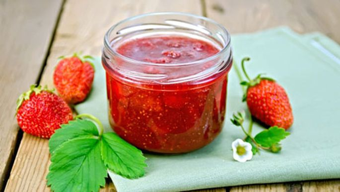
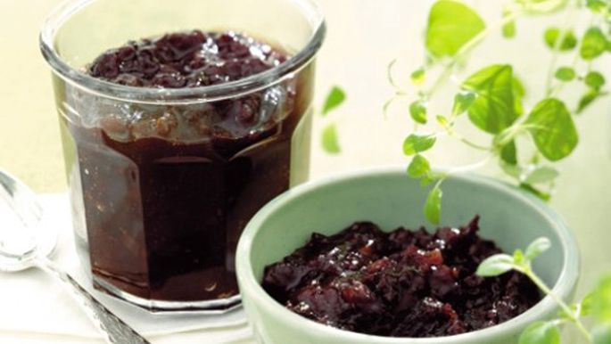
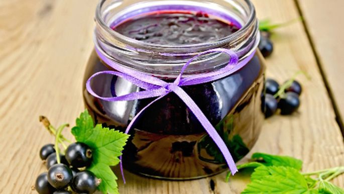

Zemeņu ievārījums

Sastāvdaļas:
- 1kg zemeņu
- 500g cukura
- burciņas
Pagatavošana: (25 min.)
- Tīras zemenes pārber ar cukuru, lai sacukurojas.
- Pēc 24 stundām liek vārīties, nosmeļ putas. Ja zemenes būs labi savilkušās ar cukuru, tad tik ātri nešķīdīs.
- Vāra apmēram 10-15 minūtes, lai paliek tumšāka krāsa.
Lai labi garšo!
Ķiršu ievārījums ar piparmētrām

Sastāvdaļas:
- 2 kg ķiršu bez kauliņiem
- 1 kg ievārījuma cukura
- 2 ēd. k. smalki sagrieztu svaigu piparmētru lapiņu
Pagatavošana: (45 min.)
- Ķiršus saber katlā, kurā vārīs ievārījumu, pārkaisa ar piparmētrām, pārber cukuru un atstāj atsuloties, vislabāk uz nakti.
- Pēc tam vāra kā ierasts.
- Gatavu ievārījumu karstu sapilda tīrās burciņās un aizvāko.
Lai labi garšo!
Vienkāršais upeņu ievārījums

Sastāvdaļas:
- 2 kg upeņu
- 2 kg cukura
- Blenderis
Pagatavošana: (15 min.)
- Tīras upenes sablendē, tad salej katlā, pieber cukuru, kārtīgi izmaisa, uzvāra un pavāra apm. 5 min.
- Lej izkarsētās burciņās un tūlīt noslēdz ar vāciņiem. Sanāk patīkams, viendabīgs želejveida ievārījums.
Lai labi garšo!